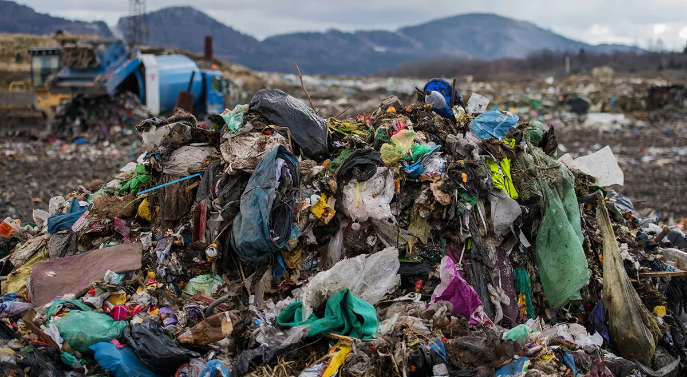

<link rel="stylesheet" href="estilo.css">
<header class="header">
  <div class="menu container">
    <label for="menu">
      
    </label>
    <nav class="navbar">
      <ul>
        <li><a href="#Introduccion" class="selected">Introducción</a></li>
        <li><a href="#Contaminacion">Contaminación</a>
          
        </li>
        <li><a href="#Tipos de contaminacion">Tipos de contaminación</a>
          <ul>
            <li><a href="CTMNC.Agua.html">Agua</a></li>
            <li><a href="CTMNC.Aire.html">Aire</a></li>
            <li><a href="CTMNC.Suelo.html">Suelo</a></li>
            <li><a href="Economia circular.html">Economía circular</a></li>
            <li><a href="Gestion.html">Gestión de Residuos</a></li>
            <li><a href="RSDS.biomedicos.html">Residuos biomedicos</a></li>
            <li><a href="RSDS.electronicos.html">Residuos electrónicos</a></li>
          </ul></li>
      </ul>
    </nav>
  </div>
  <h2>Residuos</h2> 
<p>
    La gestión de residuos es el proceso de recolección, transporte, tratamiento, reciclaje y disposición final de los
     desechos generados por las actividades humanas, tanto en hogares como en industrias y comercios. Su propósito es 
     minimizar el impacto ambiental y proteger la salud pública, además de promover la sostenibilidad mediante la
      reducción, reutilización y reciclaje de materiales. Este sistema incluye diversas etapas y estrategias para el
       manejo adecuado de cada tipo de residuo, optimizando recursos y minimizando el daño ecológico.

   <h2>Tipos de residuos y clasificación</h2> 
    <p>
    1. Residuos sólidos urbanos (RSU): generados en áreas residenciales, comerciales y de servicios. Incluyen residuos 
    orgánicos, papel, plásticos, metales, vidrio y otros desechos no peligrosos.
<p>
    2. Residuos industriales: provienen de la manufactura y procesamiento industrial. Pueden ser peligrosos o no, 
    dependiendo de su composición.
  </p>
     3. Residuos peligrosos: contienen sustancias tóxicas o peligrosas, como productos químicos, desechos biomédicos
      o residuos electrónicos. Requieren manejo especializado.
      <p>
    4. Residuos agrícolas: generados por actividades agrícolas y ganaderas, como restos de cultivos, estiércol y
     plaguicidas.
     <p>
     5. Residuos de construcción y demolición: restos de materiales utilizados en la construcción y desmantelamiento de estructuras.
     <p>
    6. Residuos electrónicos (e-waste): dispositivos eléctricos y electrónicos en desuso, como celulares, computadoras, y electrodomésticos. Estos contienen materiales tóxicos y valiosos que deben ser recuperados.
    Fases de la gestión de residuos
  </p>
<p>
    1. Generación: es la etapa inicial y se refiere a la creación de residuos en diversas actividades humanas.
  </p>
    2. Recolección y transporte: involucra el acopio y traslado de los residuos a centros de tratamiento o disposición final. Es esencial
     contar con sistemas de recolección eficientes para minimizar el impacto ambiental.
     <p>
    3. Tratamiento: incluye procesos para reducir el volumen y la peligrosidad de los residuos. Existen métodos como la incineración, el compostaje,
     la digestión anaerobia (para residuos orgánicos) y el tratamiento químico o físico.
    </p>
    4. Reciclaje y reutilización: busca la recuperación de materiales para ser utilizados nuevamente, lo que reduce la demanda de materias primas
     y disminuye la cantidad de residuos.
     <p>
    5. Disposición final: residuos que no pueden ser reutilizados ni reciclados son depositados en vertederos o rellenos sanitarios, donde se controlan
     para evitar contaminación del suelo, agua y aire.
    Estrategias de gestión sostenibles.
  </p>
    La gestión sostenible de residuos promueve métodos que minimicen la generación de desechos, maximizando la reutilización y el reciclaje. 
    Las estrategias comunes incluyen:
 Reducción en la fuente: Minimizar la generación de residuos desde el origen, por ejemplo, adoptando empaques biodegradables o diseñando productos
  duraderos. Economía circular: busca mantener los productos, materiales y recursos en el ciclo de producción-consumo el mayor tiempo posible.
     Educación y concientización: formar a la población en prácticas sostenibles, como el reciclaje y la separación en origen.
  Tecnología y digitalización: implementación de tecnologías para el monitoreo y gestión de residuos, como sensores en contenedores de basura y sistemas
   de logística para optimizar rutas de recolección.
    Retos en la gestión de residuos
    Aumento de residuos: El crecimiento de la población y el consumo incrementa la cantidad de residuos generados, sobrepasando muchas veces la capacidad
     de los sistemas de gestión.
    Falta de infraestructura: En algunos lugares, la infraestructura para el tratamiento de residuos es insuficiente o inadecuada.
    Financiamiento: La gestión adecuada de residuos requiere inversiones significativas en infraestructura, capacitación y tecnología.
    Cambio climático: La inadecuada gestión de residuos contribuye a las emisiones de gases de efecto invernadero, especialmente cuando se queman o
     descomponen en vertederos.
    Desigualdad en el acceso a sistemas de gestión: muchas zonas rurales o países en desarrollo carecen de sistemas eficaces, lo que resulta en problemas
     ambientales y de salud pública.
    Impacto ambiental y beneficios de una gestión adecuada
    Una gestión de residuos eficaz puede reducir la contaminación, evitar daños a la biodiversidad, disminuir el riesgo de enfermedades y contribuir
     a la mitigación del cambio climático. Además, al promover el reciclaje y la economía circular, se conservan recursos naturales y se fomenta el 
     desarrollo sostenible.
     
    </p>